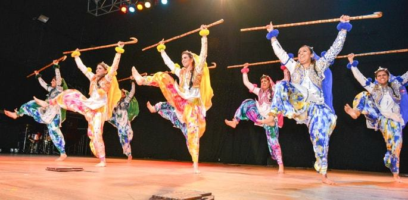
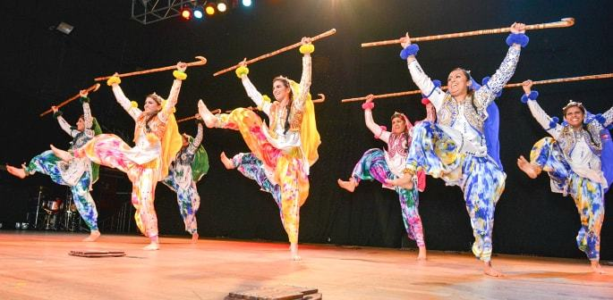

Introduction to Bhangra
Bhangra is a lively, folk dance from the state of Punjab in Northern India. Traditionally associated with the harvest festival of Vaisakhi, Bhangra has evolved from a dance performed by farmers to celebrate the coming of the spring harvest season into a vibrant, rhythmical dance form that has gained popularity across the world. Characterized by its robust, energetic moves, Bhangra is performed to the beat of the dhol drum, along with peppy music that incorporates traditional and modern influences.
Historical Roots
The origins of Bhangra can be traced back to the agricultural communities of Punjab. Originally, Bhangra was performed by men during the harvest festival to celebrate their prosperity. Over time, the dance evolved, absorbing influences from various other Punjabi dance forms such as Jhumar, Luddi, and Giddha. Post the Partition of India, Bhangra spread throughout the country and subsequently to various parts of the world due to the migration of Punjabis.
Performance and Techniques
Bhangra involves coordinated body movements, high kicks, leaps, and bends. The dance starts with a slow tempo and gradually builds up to a high energetic pace. The dancers typically wear colorful costumes, which include embroidered kurta and lungi for men and salwar kameez for women. The movement of the shoulders and the raising of the arms are significant components of the dance, typically performed in a circular formation in celebration and unity.
The music that accompanies Bhangra includes traditional folk songs along with beats from instruments like the dhol, chimta, and the algoza. In contemporary settings, Bhangra music often blends with hip-hop or reggae, creating a fusion that resonates on global dance floors.
Cultural Significance
Today, Bhangra is not only a dance that represents joy and prosperity but also an important symbol of Punjabi culture. It is performed at various cultural, festive, and social occasions, including weddings and festivals, both in India and abroad. As Bhangra continues to evolve, it maintains its traditional vibrance and enthusiasm but adapts to include contemporary music and dance moves, making it popular among the younger generation.
Explore Bhangra
 
